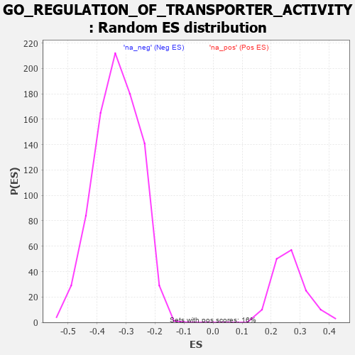

| | | Dataset | 7d |
| Phenotype | NoPhenotypeAvailable |
| Upregulated in class | na_neg |
| GeneSet | GO_REGULATION_OF_TRANSPORTER_ACTIVITY |
| Enrichment Score (ES) | -0.6227103 |
| Normalized Enrichment Score (NES) | -1.8834087 |
| Nominal p-value | 0.0 |
| FDR q-value | 0.007984493 |
| FWER p-Value | 0.115 |
Table: GSEA Results Summary
 Fig 1: Enrichment plot: GO_REGULATION_OF_TRANSPORTER_ACTIVITY
Fig 1: Enrichment plot: GO_REGULATION_OF_TRANSPORTER_ACTIVITY
Profile of the Running ES Score & Positions of GeneSet Members on the Rank Ordered List
| PROBE | GENE SYMBOL | GENE_TITLE | RANK IN GENE LIST | RANK METRIC SCORE | RUNNING ES | CORE ENRICHMENT | | 1 | THADA | | | 253 | 0.931 | -0.0146 | No |
| 2 | MEF2C | | | 1054 | 0.473 | -0.1069 | No |
| 3 | KMT2A | | | 1130 | 0.458 | -0.1078 | No |
| 4 | JPH1 | | | 1741 | 0.347 | -0.1785 | No |
| 5 | SLMAP | | | 1744 | 0.346 | -0.1722 | No |
| 6 | FMR1 | | | 1816 | 0.334 | -0.1750 | No |
| 7 | KCNC2 | | | 2075 | 0.295 | -0.2021 | No |
| 8 | LRRC7 | | | 2080 | 0.294 | -0.1971 | No |
| 9 | PHB2 | | | 2712 | 0.197 | -0.2732 | No |
| 10 | COX17 | | | 3019 | 0.147 | -0.3091 | No |
| 11 | CHP1 | | | 3089 | 0.138 | -0.3153 | No |
| 12 | KCTD7 | | | 3417 | 0.088 | -0.3550 | No |
| 13 | CDK5 | | | 3480 | 0.080 | -0.3613 | No |
| 14 | PDE4B | | | 4089 | -0.022 | -0.4377 | No |
| 15 | WNK3 | | | 4153 | -0.034 | -0.4451 | No |
| 16 | STAC | | | 4327 | -0.064 | -0.4657 | No |
| 17 | ADRB2 | | | 4352 | -0.068 | -0.4675 | No |
| 18 | JPH3 | | | 4481 | -0.091 | -0.4820 | No |
| 19 | PIM1 | | | 4776 | -0.152 | -0.5163 | No |
| 20 | MYO5A | | | 4787 | -0.155 | -0.5147 | No |
| 21 | SGK1 | | | 4852 | -0.168 | -0.5196 | No |
| 22 | DLG1 | | | 4860 | -0.169 | -0.5173 | No |
| 23 | DRD2 | | | 5088 | -0.221 | -0.5419 | No |
| 24 | MMP9 | | | 5108 | -0.227 | -0.5401 | No |
| 25 | PTEN | | | 5262 | -0.261 | -0.5545 | No |
| 26 | GRIN1 | | | 5381 | -0.291 | -0.5640 | No |
| 27 | DLG4 | | | 5388 | -0.293 | -0.5593 | No |
| 28 | WNK1 | | | 5650 | -0.362 | -0.5855 | No |
| 29 | TRPC6 | | | 5784 | -0.401 | -0.5949 | No |
| 30 | ACTN2 | | | 5960 | -0.458 | -0.6084 | Yes |
| 31 | STAC2 | | | 5987 | -0.466 | -0.6030 | Yes |
| 32 | NETO2 | | | 6009 | -0.475 | -0.5968 | Yes |
| 33 | DLG2 | | | 6126 | -0.513 | -0.6019 | Yes |
| 34 | GOPC | | | 6167 | -0.528 | -0.5971 | Yes |
| 35 | STIM1 | | | 6169 | -0.528 | -0.5874 | Yes |
| 36 | RGN | | | 6233 | -0.547 | -0.5852 | Yes |
| 37 | STK39 | | | 6274 | -0.563 | -0.5797 | Yes |
| 38 | GALR2 | | | 6355 | -0.599 | -0.5787 | Yes |
| 39 | DYSF | | | 6481 | -0.654 | -0.5823 | Yes |
| 40 | VAMP2 | | | 6525 | -0.672 | -0.5752 | Yes |
| 41 | REM1 | | | 6530 | -0.676 | -0.5631 | Yes |
| 42 | CCR2 | | | 7003 | -0.939 | -0.6052 | Yes |
| 43 | GRM5 | | | 7053 | -0.969 | -0.5933 | Yes |
| 44 | CFTR | | | 7143 | -1.030 | -0.5854 | Yes |
| 45 | ANK2 | | | 7298 | -1.170 | -0.5830 | Yes |
| 46 | GPD1L | | | 7343 | -1.215 | -0.5659 | Yes |
| 47 | CALM1 | | | 7567 | -1.499 | -0.5661 | Yes |
| 48 | GRIA3 | | | 7648 | -1.642 | -0.5456 | Yes |
| 49 | ANK3 | | | 7690 | -1.740 | -0.5183 | Yes |
| 50 | PDE4D | | | 7764 | -1.944 | -0.4913 | Yes |
| 51 | PKD2 | | | 7822 | -2.167 | -0.4581 | Yes |
| 52 | KCNC1 | | | 7835 | -2.249 | -0.4176 | Yes |
| 53 | GRIA1 | | | 7836 | -2.260 | -0.3755 | Yes |
| 54 | TCAF2 | | | 7854 | -2.428 | -0.3323 | Yes |
| 55 | CALM3 | | | 7869 | -2.525 | -0.2870 | Yes |
| 56 | GRIA2 | | | 7885 | -2.684 | -0.2388 | Yes |
| 57 | CAV3 | | | 7896 | -2.739 | -0.1890 | Yes |
| 58 | TCAF1 | | | 7901 | -2.803 | -0.1372 | Yes |
| 59 | DAPK1 | | | 7950 | -3.767 | -0.0730 | Yes |
| 60 | GRIA4 | | | 7961 | -4.049 | 0.0013 | Yes |
Table: GSEA details [plain text format]

Fig 2: GO_REGULATION_OF_TRANSPORTER_ACTIVITY: Random ES distribution
Gene set null distribution of ES for GO_REGULATION_OF_TRANSPORTER_ACTIVITY